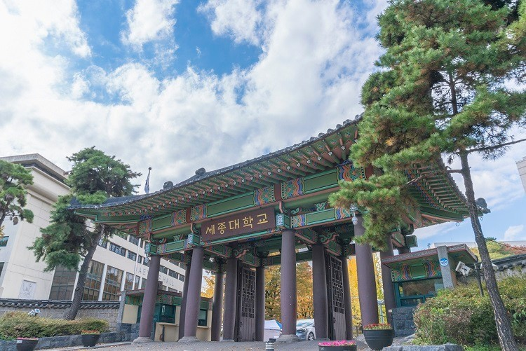

요즘 정시 이야기에는 "영어는 비중이 작으니 나중에"가 거의 공식처럼 붙습니다. 세종대학교 표를 열면 그 공식이 멈춥니다. 영어가 20%입니다. 영어를 10%로 두는 대학의 두 배이고, 인문계열에서는 탐구와 같은 무게입니다. 이 글은 그 표를 그래서 어느 과목을 먼저로 바꿔 읽습니다. 고3 영어과외에 시간을 남길지 말지를 정하는 기준이 됩니다.
| 계열 | 국어 | 수학 | 영어 | 탐구 |
|---|---|---|---|---|
| 인문계열 | 30% | 30% | 20% | 20% |
| 자연계열 | 20% | 35% | 20% | 25% |
두 계열 모두 영어가 20%입니다. 자유전공학부처럼 계열과 또 다른 비율을 쓰는 모집단위도 있어, 지망 학과의 칸은 요강에서 따로 확인해야 합니다.
영어 10% 대학과 20% 대학은 같은 등급으로도 결과가 다릅니다. 영어 한 등급이 흔들릴 때 잃는 점수가 두 배라는 뜻입니다. 인문계열에서는 영어 20%가 탐구 20%와 같고, 국어·수학(각 30%)과의 차이도 10%p뿐입니다.
그래서 세종대학교를 목표에 넣는다면 과목 순서에서 영어를 맨 끝으로 밀지 않는 것이 첫 조정입니다. 영어에 하루 두 시간을 쓰다가 30분으로 줄인 학생이 가장 손해를 보는 표입니다.
인문계열 국어 30%, 수학 30%. 자리를 바꿔도 결과가 같은 동률입니다. 문과라서 수학은 방어만 하겠다는 계획은 여기서 절반을 포기하는 계획이 됩니다. 반대로 국어가 약하고 수학이 강한 학생에게는 불리함이 상쇄되는 구조라 유리하게 쓸 수 있습니다.
정리하면 인문계열 순서는 국어·수학을 같은 무게로 → 영어와 탐구를 같은 무게로입니다. 네 과목 중 하나를 버려서 얻는 이득이 거의 없는 배분입니다.
자연계열은 수학 35%가 가장 무겁고, 그다음이 탐구 25%입니다. 탐구가 국어(20%)보다 높습니다. 탐구 두 과목이면 과목당 12.5%씩이니, 한 과목만 잘 잡아도 국어의 절반을 가져가는 셈입니다.
그래서 자연계열 순서는 수학 → 탐구 → 영어 → 국어가 됩니다. 국어를 버린다는 뜻이 아니라, 국어에 쓰는 시간을 늘리기보다 탐구 두 과목을 끝까지 끌고 가는 쪽이 점수로 돌아온다는 뜻입니다.
학생 수준에 맞는 선생님을 24시간 안에 추천해 드려요. 상담은 무료입니다.